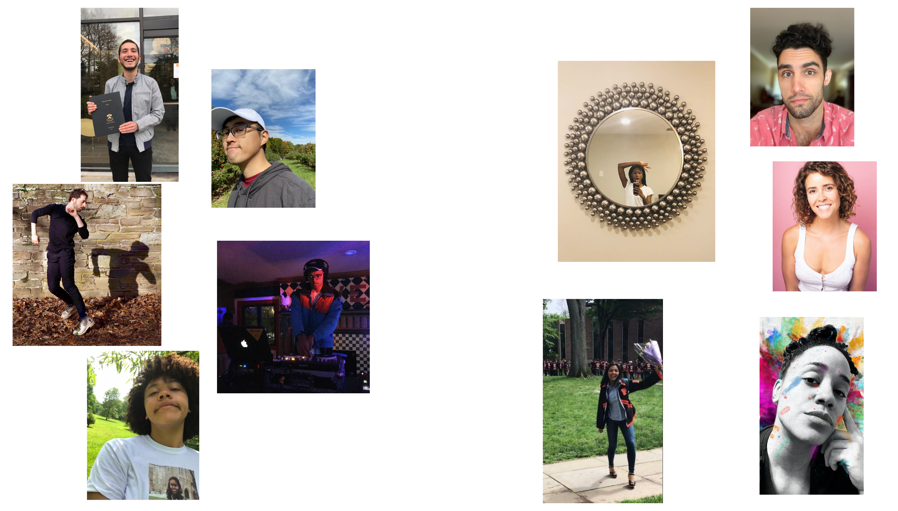
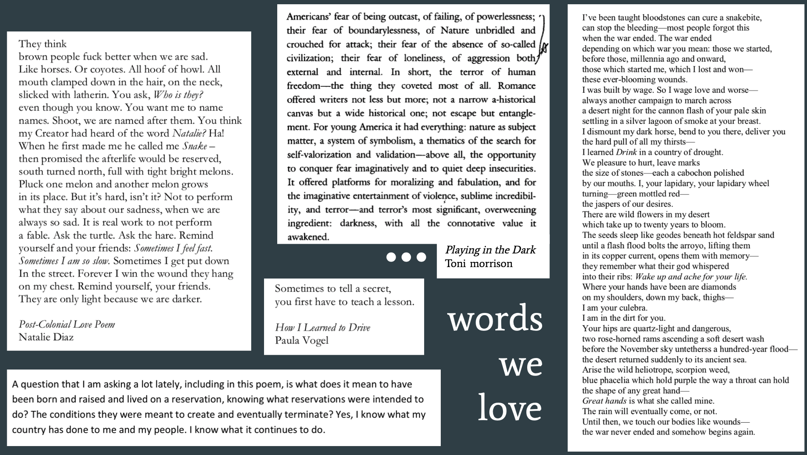
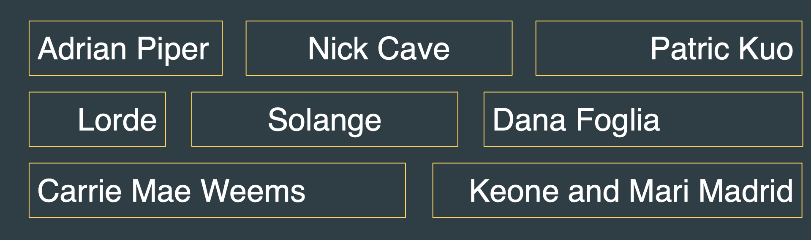

home
the faces
notes from playwright
and director
words we love
visual landscape
notes from dramaturg
and sound designer
our sonic world
artists who inspire us
princeton things
when the party's over
a play by E. Rosales-Balcarcel
YSD Spring 2021 Workshop
a digital lobby
for our virtual reading
the faces

a note from playwright
She considered the birds to be her friends. She'd put out food for them each morning and then she'd watch as they came to the feeders to gorge themselves for the day. She wondered what they would do if something ever happened to her. Would they miss the meals she provided if she failed to put out the food one morning?
a note from director
E and I first became friends at Princeton while I was on crew for a production of Elektra that E was stage managing. After each performance, E and I would clean and re-paint the stage floor – which took us hours to finish because we would really just chill and talk and paint and dance around to music that E would blast over the speakers. A few weeks later, E and I began rehearsals for a production of Singin’ in the Rain that I was directing for my thesis and E was stage managing. The process of rehearsing Rain at times seemed and felt impossible – 26 performers full of schedule conflicts, rehearsals going until 1am, rose petals and mylar and umbrellas everywhere, tons of dream ballets, etc. E and I would stay late after each rehearsal talking through all of the layers of the world of Rain and workshopping some ideas on our bodies. E was a brilliant stage manager because they led with the heart, with the art, and with deep deep care. During performances I stood in the back of the theater and could sometimes hear E from behind the plexiglass calling the show – feeling all of the lighting shifts, the mylar drops, the sound cues in and out, their interstitial moments of ‘oop what just happened?’ and ‘ah yesss Kamber is amazing wow.’ I have always been inspired and enamored by E’s vision, their love for and connection to performers, and their deep sense of music and dance in storytelling.
E sent me the first draft of PARTY in 2019 and right away we re-entered that mode of building a world together. This lab is our first developmental opportunity to collaborate with performers and a creative team – a lab that we have been dreaming about together since E shared that first draft with me. These last few weeks have been incredibly generative for all of us – the brilliant performers pouring their full selves into the play; our longtime friend and collaborator Abigail Jean-Baptiste guiding us through the dramaturgical world; another longtime friend and collaborator Stan Mathabane – who performed in and co-sound designed that production of Rain! – surprising us daily with genius original compositions and DJscapes; and our incredible and deeply caring stage manager Kevin Zhu holding us all together. Thank you all so much for joining us today and diving into the world of PARTY.
Big Love + Gratitude,
Adin Walker (director, he/they)

visual landscape
a note from
sound designer
a note form
dramaturg
She considered the birds to be her friends. She'd put out food for them each morning and then she'd watch as they came to the feeders to gorge themselves for the day. She wondered what they would do if something ever happened to her. Would they miss the meals she provided if she failed to put out the food one morning?
our sonic world

artists who inspire us
princeton things